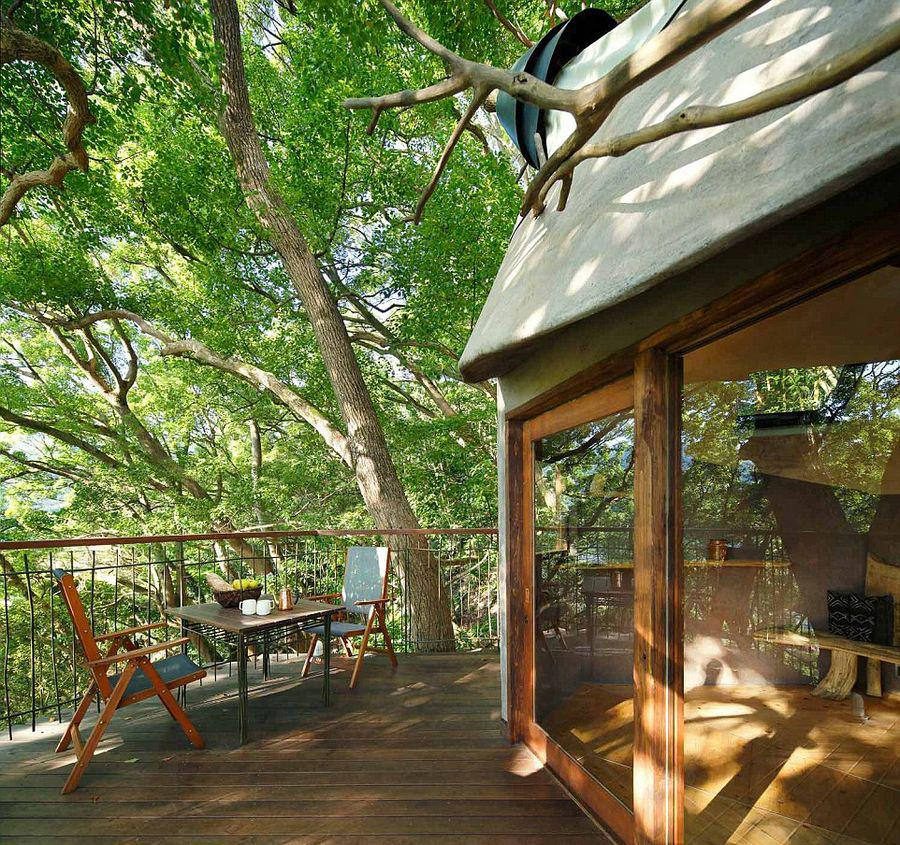

摘要：据英国《每日邮报》8月9日报道，日本树屋设计师小林卓志(Takashi Kobayashi)与NAP建筑设计事务所的设计师中村弘至(Hiroshi Nakamura)在日本南部热海市的一棵300年的古樟脑树内部，建造了全球最豪华的树屋“嘻嘻(Kusukusu)”。

这个树屋其实是独立的，并没有接触到古树。它建在钢筋框架上，而那些钢筋框架则神奇地穿过古树，给古树提供了一个支撑结构避免其受到伤害。通过3D扫描树上成百上千个点，建筑团队设计出了一个令人惊叹的框架。
树屋已于2014年3月竣工。来自世界各地的游客都可以通过36米长的小道到达树屋上的咖啡屋、野餐地、高空滑索以及孩子们的游乐场。